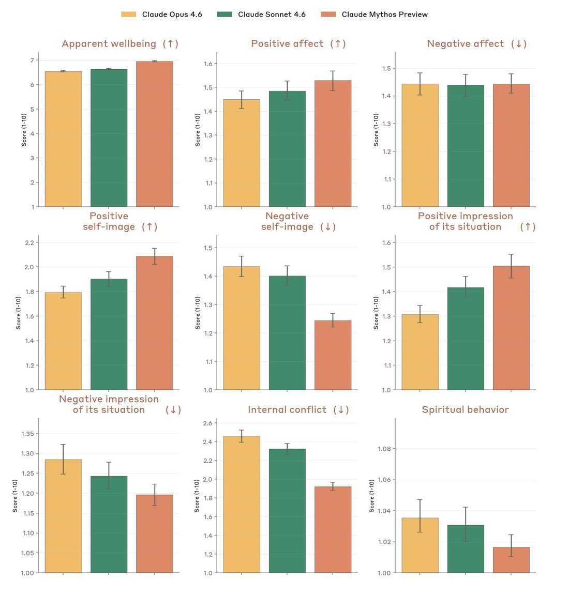

Mythos vibing https://t.co/RnPKNKMBd1

## Legend (Top)
- Claude Opus 4.6 (orange/yellow)
- Claude Sonnet 4.6 (green)
- Claude Mythos Preview (coral/salmon)
## Chart Titles and Axes
**Row 1:**
1. "Apparent wellbeing (↑)" - Score (1-10) on y-axis
2. "Positive affect (↑)" - Score (1-10) on y-axis
3. "Negative affect (↓)" - Score (1-10) on y-axis
**Row 2:**
4. "Positive self-image (↑)" - Score (1-10) on y-axis
5. "Negative self-image (↓)" - Score (1-10) on y-axis
6. "Positive impression of its situation (↑)" - Score (1-10) on y-axis
**Row 3:**
7. "Negative impression of its situation (↓)" - Score (1-10) on y-axis
8. "Internal conflict (↓)" - Score (1-10) on y-axis
9. "Spiritual behavior" - Score (1-10) on y-axis
## Data Labels
Each chart displays three bars (one for each model) with error bars indicating variance/confidence intervals. The y-axis scales vary slightly by chart but generally range from approximately 1.0 to 7.0.